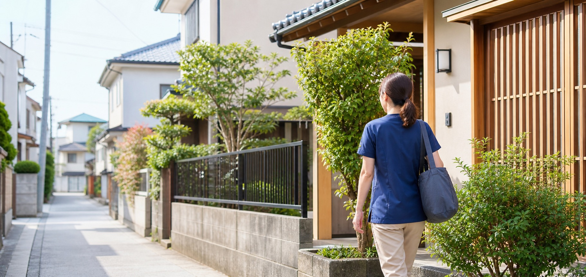

健康状態の観察
血圧・体温・脈拍などを定期的に確認し、小さな変化を見逃さないよう体調を見守ります。
森の訪問看護ステーション
ご自宅での療養生活に不安を感じている方や、ご家族の介護に悩まれている方へ。
森の訪問看護ステーションは、看護師がご自宅へ伺い、体調管理・服薬管理・医療処置・ご家族への支援まで、安心して暮らし続けるためのサポートを行います。
私たちについて
病気や障がいがあっても、住み慣れた家で、いつもの暮らしを続けたい。
そんな願いを支えるのが、私たち訪問看護の仕事です。
森の訪問看護ステーションでは、看護師が定期的にご自宅へ伺い、体調の変化を見守りながら、医療的なケアと暮らしの安心をお届けします。ご本人だけでなく、介護をされるご家族の不安にも、ていねいに寄り添います。
私たちの想いを見るできること
医療の専門知識をもとに、日々の体調管理から医療処置、ご家族の相談まで幅広く対応します。
血圧・体温・脈拍などを定期的に確認し、小さな変化を見逃さないよう体調を見守ります。
お薬の飲み忘れや飲み間違いがないよう、無理のない方法を一緒に考えながら整えます。
点滴・カテーテル・床ずれの手当てなど、主治医の指示にもとづいた処置をご自宅で行います。
介護の方法やお悩みの相談など、支えるご家族の負担が軽くなるようお手伝いします。
からだの状態に合わせた運動や、食事・入浴など毎日の暮らしを支えるケアを行います。
主治医やケアマネジャーと情報を共有し、チームでご本人とご家族を支えます。
ご利用までの流れ
お電話またはフォームから、お気軽にご連絡ください。
現在のご様子やお困りごとを、ゆっくりお伺いします。
必要な手続きは私たちが間に入って進めます。
ご本人とご家族の希望に合わせた計画をつくります。
担当の看護師が、定期的にご自宅へ伺います。
対応エリア
鹿児島市、霧島市、姶良市周辺のご自宅へ伺っています。
※エリア外にお住まいの方も、まずは一度ご相談ください。

よくある質問
赤ちゃんからご高齢の方まで、主治医が「訪問看護が必要」と判断された方であれば、どなたでもご利用いただけます。年齢や病気の種類で利用できないということはほとんどありません。
もちろん大丈夫です。「本人にはまだ話していないけれど…」という段階のご相談も多くいただいています。ご家族のお気持ちを伺いながら、一緒に進め方を考えます。
24時間の連絡体制を整えており、夜間や休日も看護師に電話でご相談いただけます。状態に応じて緊急訪問にも対応しますので、夜のひとり時間も安心してお過ごしください。